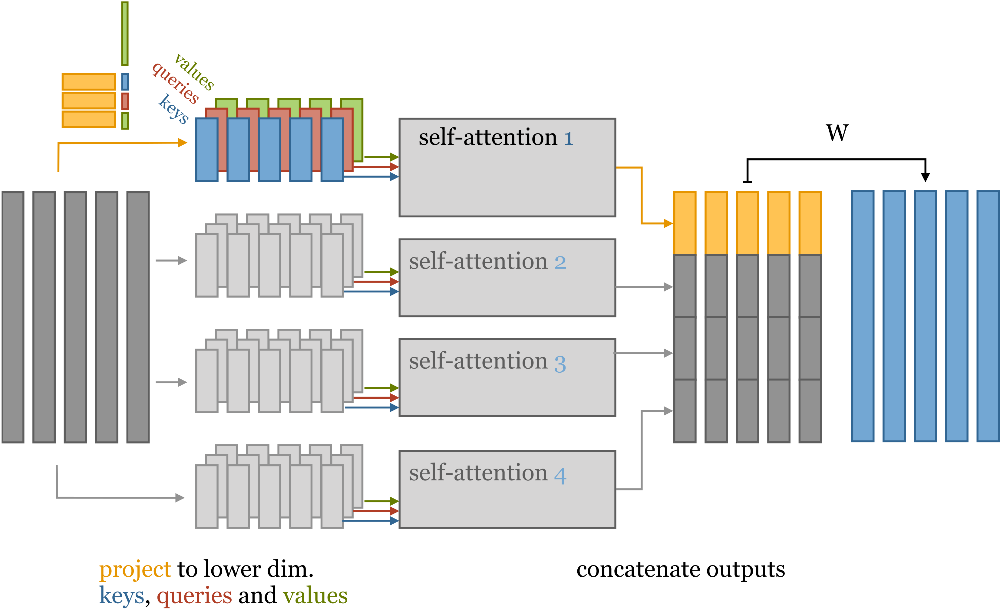

Introduction
In this chapter we cover transformers.
Transformers are currently the state of the art for natural language processing (NLP) tasks. For example, large language models are basically just huge transformers (with some extra tricks).
Self-attention
The main idea behind transformers is the self-attention operation.
This operation takes in a sequence of \(n\) dimensional vectors \(x_1, \dots, x_k\) and outputs another sequence of \(n\) dimensional vectors of same length \(y_1, \dots, y_k.\) In NLP tasks these vectors represent the tokens of the text.
Self-attention
The output vector \(y_i\) is obtained as a weighted sum of input vectors: \[
y_i = \sum_{j} w_{ij}x_j.
\]
These \(w_{ij}\) are not weights of the model but are instead computed as \[
w'_{ij} = x_ix_j^T, \ w_{ij} = \frac{e^{w'_{ij}}}{\sum_j e^{w'_{ij}}}
\]
Self-attention
That is to compute \(w_{ij}\) we first compute the Euclidean inner product of \(x_i\) with the rest of the input vectors \(x_j\) and then we apply softmax to them. Softmax is applied to normalize the inner products.
For now we have no weights in self-attention, we will discuss how to add them later.
Self-attention
To understand what problem self-attention tries to solve consider the following paragraph:
“The cat lived in a barn. It liked to chase mice.”
To parse this paragraph you need to know what “It” in the second sentence refers to. To do this you need to look at all the nouns in the preceding sentence and pick one based on context.
The idea is that when trying to understand what specific words in a sentence mean we need to pay special attention to other words.
Self-attention
This is exactly what self-attention allows the model to do. When parsing input vector \(x_i\) it allows the model to focus on all other input vectors that are relevant when parsing \(x_i\).
The inner product measures how “related” the two vectors are. The meaning of related depends on the modeling task.
To produce the output \(y_i\) we first measure how related \(x_i\) is to all other input vectors \(x_j,\) we then compute the weighted sum of the \(x_i\) based on this relevance to obtain the \(y_i.\)
Self-attention
To get the self-attention layer used in actual transformers we need three extra additions.
Self-attention
- Queries, keys and values:
In self-attention each input vector \(x_i\) is used in three distinct ways:
- It is compared to every other input vector to get the \(w_{ij}\) used to compute its own output \(y_i.\)
- It is compared to every other input vector to get the \(w_{ji}\) used to compute outputs for all other input vectors \(x_j.\)
- It is used in the weighted sum to get each output vector \(y_j.\)
Self-attention
These three distinct roles are called query, key and value. In actual self-attention three different \(k\) by \(k\) matrices \(Q\), \(K\) and \(V\) are used to preprocess the \(x_i\) before computing \(y_i.\) This gives extra flexibility and also weights for the model to learn.
So the formulas now are: \[
q_i = Qx_i, \ k_i = Kx_i, \ v_i = Vx_i,
\] \[
w'_{ij} = q_ik_i^T, w_{ij} = \text{softmax}(w'_{ij}),
\] \[
y_i = \sum_{j}w_{ij}v_j.
\]
Self-attention
- Normalizing the inner product:
The inner product used to compute \(w'_{ij}\) is normalized as \[
w'_{ij} = \frac{q_ik_i^T}{\sqrt{n}},
\] where \(n\) is the dimension of \(x_i.\)
Self-attention
- Multi head attention:
A single self-attention operation can learn only one relationship between the inputs. However, it is reasonable to assume that there probably is more than one relationship. We would have to apply several self-attention operations to the input to be able to learn them. This increases the model size considerably.
Turns out we can apply several self-attention operations without increasing the size of the model. This is called multi head attention.
Self-attention
For concreteness, suppose the dimension of our input vectors \(x_i\) is \(40.\) To apply multi head attention with \(4\) “heads” we proceed as follows. First, we are going to have four separate query, key and value matrices each: \[
Q_{r}, K_r, V_r, \ r=1,2,3,4.
\] These matrices are not going to be square but instead \(40\) by \(10.\)
Self-attention
We apply these matrices to our input vectors to project them into four sets of \(10\) dimensional query, key and value vectors. We then apply self-attention to each of these sets.
We then concatenate the outputs to obtain \(40\) dimensional vectors \(y_i.\) Lastly, for the model to be able to learn a proper embedding (instead of just a concatenation) we multiply each vector by a \(40\) by \(40\) matrix \(W.\)
Self-attention
Here is the diagram of the whole process (it was taken from this blogpost):

Practice task
Try building a transformer model for sentiment analysis on this dataset.